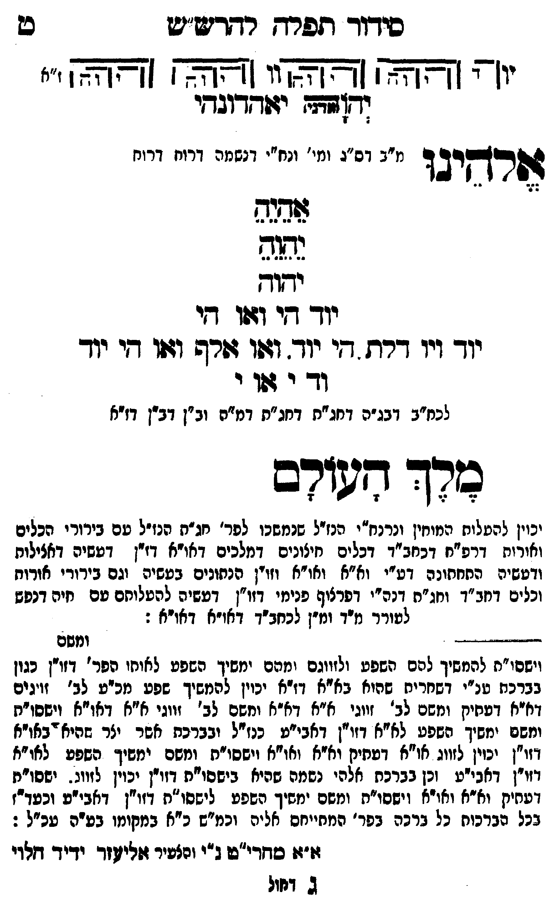

Neue Klartextfassung
[תרשים: ארבעה צירופי יהוה בקווים אופקיים ואנכיים המחברים את האותיות. לצדי התרשים וי וי וי וי; ז"א.] יאהדונהי יהוה (אדני) אלהינו [מ"ב דס"ג ומי' ונח"י דנשמה דרוח דרוח] אֵהֵיֵהֵ יֵהֵוֵהֵ יהוה יוד הי ואו הי יוד ויו דלת, הי יוד. ואו אלף ואו הי יוד וד י או י [לכח"ב דבג"ה דחג"ת דחג"ת דמ"ה וב"ן דב"ן דז"א] מלך העולם [יכוין להעלות המוחין ונרנח"י הנז"ל שנמשכו לפר' חג"ת הנז"ל עם בירורי הכלים ואורות דרפ"ח דכחב"ד דכלים חיצונים דמלכים דאו"א דזו"ן דעשיה דכללות ורביעיה התחתונה דע"י וא"א ואו"א וזו"ן הנתונים בעשיה וגם בירורי אורות וכלים דכחב"ד וחג"ת ונה"י דפרצוף פנימי דזו"ן דעשיה להעלותם עם חיה דנפש לעורר מ"ד ומ"ן לכחב"ד דאו"א דאו"א:]
Original gegen neue OCR · Niqqud für Vergleich ausgeblendet
Original
[תרשים: ארבעה צירופי יהוה בקווים אופקיים ואנכיים המחברים את האותיות. לצדי התרשים וי וי וי וי; ז"א.] יאהדונהי יהוה (אדני) אלהינו [מ"בK022-001 דס"ג ומי' ונח"י דנשמה דרוח דרוח] אהיה יהוה יהוה יוד הי ואו היK022-002 יוד ויו דלת, היK022-003 יוד. ואו אלף ואו היK022-004 יוד ודK022-005 י אוK022-006 י [לכח"בK022-007 דבג"ה דחג"ת דחג"תK022-008 דמ"ה וב"ן דב"ן דז"א] מלך העולם [יכוין להעלותK022-009 המוחין ונרנח"יK022-010 הנז"ל שנמשכו לפר' חג"ת הנז"ל עםK022-011 בירורי הכלים ואורות דרפ"ח דכחב"דK022-012 דכלים חיצוניםK022-013 דמלכים דאו"א דזו"ןK022-014 דעשיה דכללות ורביעיה התחתונהK022-015 דע"י וא"א ואו"א וזו"ןK022-016 הנתונים בעשיה וגם בירורי אורותK022-017 וכלים דכחב"ד וחג"ת ונה"יK022-018 דפרצוף פנימי דזו"ן דעשיה להעלותםK022-019 עם חיה דנפש לעוררK022-020 מ"ד ומ"ןK022-021 לכחב"ד דאו"א דאו"א:]K022-022
OCR · fehlbar
סידוד תפרש רףדדשיש ט יו( [[צאאא] [צאא] ו [[צ[אצא [זצצצא י" (ד[דהן יזודדובחי זשרקיב ד מ"בK022-001 דס"ג ומי' ונח"י דנשמה דרוח דרוח גחצף יחוץ יודך דזי וגפו דיK022-002 יוד ויו דרת דיK022-003 יוד. וזשו גזר וגזו דיK022-004 יוד ודךK022-005 י שוK022-006 י לכמ"בK022-007 דבג"ה דחג"ת דחג"חK022-008 דמ"ה וב"ן דב"ן דז"א כרך חעורם צא תי 7 פ[ יכוין להטלוחK022-009 המוחין ונרנח"יןK022-010 הנז"ל שנמשכו לפר' חג"ת הנז"ל טםK022-011 בירורי הכלים ואורות דרפ"ח דכחבי"דK022-012 דכלים חיצוניסK022-013 דמלכים דאו"א דז"ןK022-014 דעשיה דאצילות ודטשיה החחחונהK022-015 דע"י וא"א ואו"א וזויןK022-016 הנתונים בעשיה וגם בירורי אודוחK022-017 וכלים דחב"ד וחג"ח דנה"יK022-018 דפרצוף פנימי דזו"ן דעשיה להטלוחםK022-019 עם חיה דנפש לטוררK022-020 מ"ד ונז"ןK022-021 לכחב"ד דאו"א דאודא : -ד---- - - ומשם וישסו"ח להמשיך להם השפע ולזווגם ומהם ימשיך השפט לאוחו הפר' דזו"ן כגון בברכח שנ"י דשחרית שהוא באיא דז"א יכוין להמשיך שפע מכיע לב' זויגים דיא דטחיק ומשם לב' זווגי א"א דא"א וחשם לב' ' זווגי איא דאו"א וישסו"ח ומשם ימשיך השפע. לא"א דזו"ן דאבי"ע כנז"ל ובברכת אשר יצר שהיא"באו"א דזו"ן יכוין לזווג או"א דפתיק וא"א ואו"א וישסיי"ת ומשם ימשיך השפע לאו"א וזי"ן דאבי"ע זכן בברכת אלהי נשמה שהיא בישפוית דזורן יכוין לזוונ . ישסויח דעתיק וא"א ואו"א וישסו"ח ומשם ימשיך השפע לישסו"ת צזו"ן דאבי"ע וכעדדז בכל הברכות כל ברכה בפר' המחייחס "אליה וכמ"ש כ"א במקומו בט"ה עכ"ל : זו"ז: סחדי"שו ג"י והלשיר זזליזר ידיד זלוי ג דזולK022-022